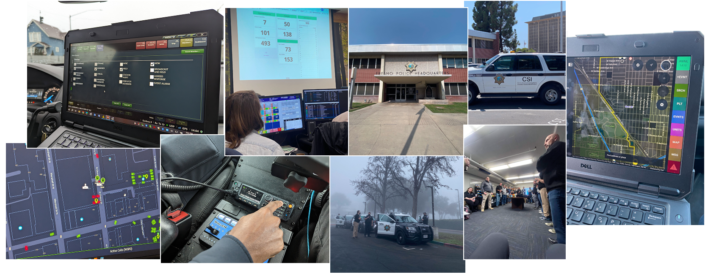
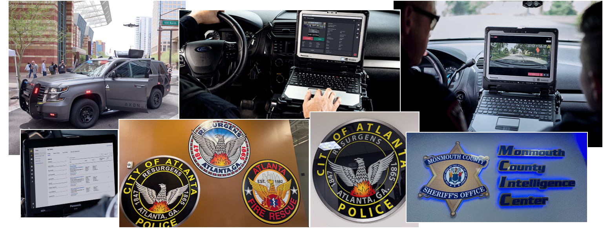
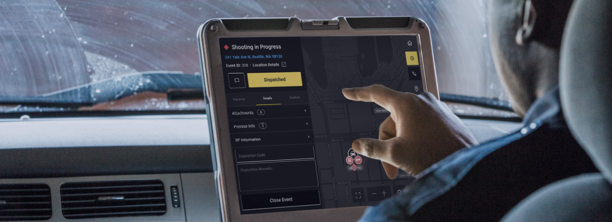
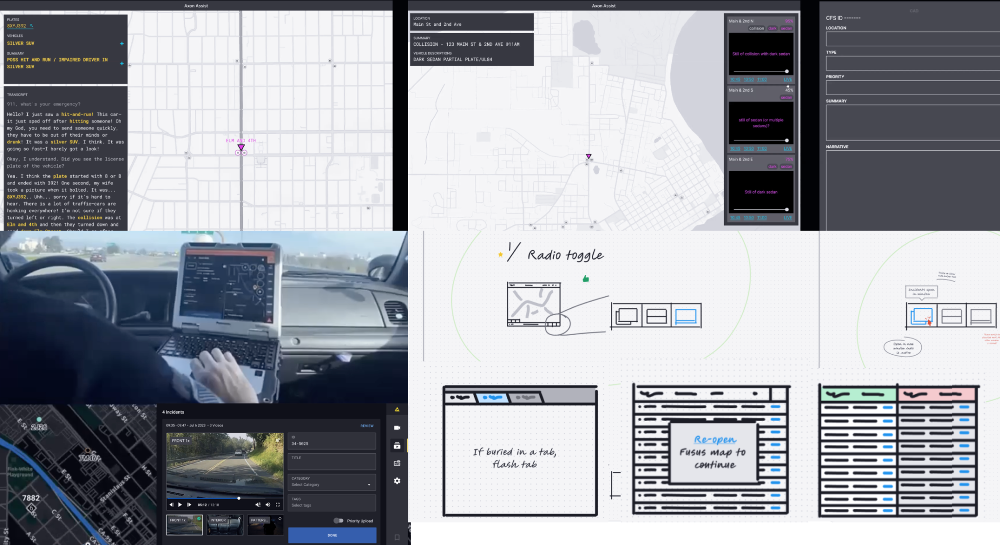
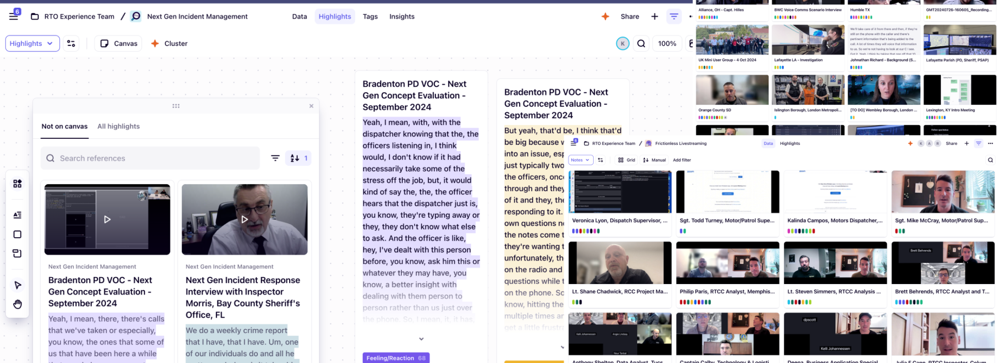
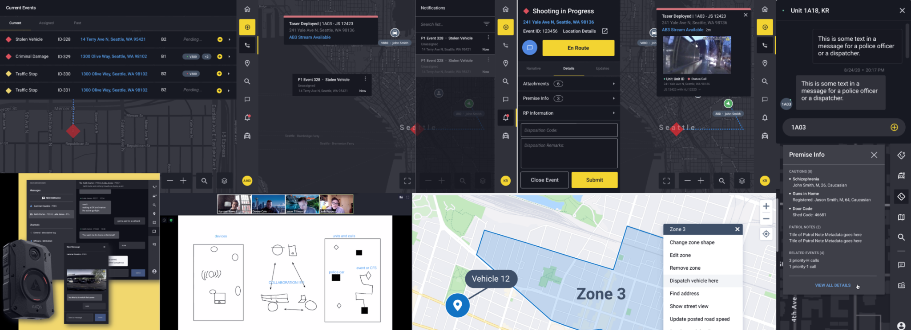
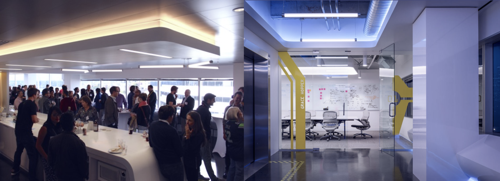

Seconds vs. Screens: Reducing Cognitive Load in the Patrol Cockpit
Context

First responders rely on in-car MDTs to navigate and receive life-saving data, yet most existing systems are antiquated, requiring precise touch input on unresponsive screens—often while the vehicle is in motion.
The Objective
- Modernize the MDT: Transform laggy, desktop-port software into a touch-first, high-contrast mobile experience.
- Reduce Distracted Driving: Streamline workflows to minimize "eyes-off-the-road" time.
- Close the Information Gap: Ensure critical dispatch updates are prominent and digestible at a glance, preventing "blind" arrivals on-scene.
Problem Statement
In public safety, every second spent "Alt-Tabbing" through a legacy MDT is a second lost on-scene. The current friction between unresponsive hardware and information-dense software results in delayed arrivals and uninformed responses. My goal was to transform the MDT from a burdensome data entry tool into a tactical asset that minimizes mental overhead and maximizes road safety through automated, high-contrast, and simplified workflows.

Research & Discovery: The Field Reality
I conducted extensive ride-alongs across law enforcement. By observing "day-in-the-life" patrols alongside high-acuity emergency calls, I identified the critical friction points between responders and their technology.
Key Insights:
- The Ergonomic Failure of Legacy Hardware: Physical environmental factors—including extreme cockpit glare, vehicle vibration, and poor resistive touch sensitivity—rendered traditional desktop-port interfaces nearly unusable and highly error-prone during transit.
- The "Contextual Blindness" of Static UI: Current systems lacked incident-state awareness. The interface remained static regardless of whether a responder was navigating to a high-priority call or already active on-scene, cluttering the view with irrelevant tools (like routing) when tactical data was needed most.
- The Manual Input Burden: The "Manual-First" design of legacy software forced dangerous distractions, requiring precise data entry at moments when the driver's cognitive load was already peaked.
Ideation & Strategy: Designing for High-Acuity Environments

The Strategy: By partnering with a pilot precinct, we introduced "modular updates" that allowed us to validate usability in the field without compromising officer safety or system uptime.
Key Strategic Pillars:
-
Contextual Adaptability (The "Experience Toggle"): Recognizing that a "one-size-fits-all" UI fails in public safety, I architected a configurable interface that adjusts to user proficiency.
- Expert Mode: Minimalist tactical views for veteran officers with high local knowledge.
- Assisted Mode: Proactive, turn-by-turn navigational support for new recruits and mutual-aid responders.
- Dynamic Noise Suppression: To protect the responder’s focus, we developed intelligent filtering logic. When a responder is assigned to a high-priority incident, the system automatically suppresses non-essential alerts, ensuring the "signal-to-noise" ratio remains optimized for the mission at hand.
-
Input Optimization & Friction Reduction: I transitioned the system from "Manual-First" to "Automation-First."
- Smart Defaults: Pre-populating mission data by syncing real-time CAD feeds.
- Tactile UX: Implementing high-hit-area touch gestures and voice-command hooks to eliminate the need for precise "hunt-and-peck" typing during high-speed transit.
- Strategic Change Management: We addressed this by identifying "Field Champions"—veteran responders who co-created the system. Their "buy-in" transformed the rollout from a top-down mandate into a peer-endorsed tool, drastically reducing training friction.
Design & Iteration: Validating in the "In-Car Experience"

High-Fidelity Field Testing: I moved beyond the desk, conducting iterative prototyping directly inside patrol vehicles. By testing with our pilot group in situ, I was able to observe how vibrations, lighting shifts, and high-stress "active calls" impacted the usability of our UI. This allowed us to validate the design in a live precinct before scaling across the department.
Key Iterations & Refinements:
- The "Triage" of Information Architecture: We prioritized high-criticality, high-frequency workflows, stripping away secondary UI elements during active incidents to reduce the probability of "error-under-stress."
- Environmental Light Adaptability: To solve for extreme cockpit glare and pupil dilation during night shifts, I implemented Automated Day/Night Modes. This wasn't just a theme change—it was a safety requirement to ensure 100% readability across 24-hour shifts.
- Semantic Color-Coding for Mental Mapping: I utilized systematic color-coding to provide instant orientation. By assigning specific "chromatic anchors" to core modules, I enabled users to identify their location within the app using only their peripheral vision.
- Ergonomic Precision (The "Right-Hand" Pivot): Field testing revealed that drivers struggled with "reach-over" fatigue. I iterated on the layout to pin critical navigation elements to the right side of the viewport, shortening the physical reach and increasing tap precision for the driver.
Development & Collaboration: Engineering for the Edge Case

The Strategy: I collaborated closely with our technical teams to ensure the UI didn't just look good in a Figma file, but performed flawlessly in the "disconnected" reality of the field.
Key Collaborative Wins:
- Designing for "Offline-First" Resilience: Public safety data is only useful if it’s available. I worked with engineers to design predictable latency states, ensuring the UI provided clear feedback and maintained core functionality even during "signal dead zones." We prioritized local data caching to prevent interface freezes during critical navigation.
- Hardware-Agnostic Input Standardization: I led the effort to standardize multimodal inputs (Touch + Voice), ensuring that gesture-based commands and voice hooks remained consistent and performant across a fragmented landscape of ruggedized tablets and mounted MDTs.
Impact & Results: Quantifying Safety and Adoption

The transition to the new in-car ecosystem yielded immediate and measurable improvements in both operational safety and user sentiment. Within 4 weeks of deployment:
- 94% Preferred Adoption: Nearly the entire pilot group favored the new experience over the legacy system, citing a drastic reduction in task-completion time.
- 92% Improved Situational Awareness: Users reported that the "glanceable" UI architecture and automation-first workflows made it significantly easier to maintain focus on the road while staying synchronized with mission-critical data.
Reflections & Strategic Learnings
- Incrementalism as a Trust-Building Strategy: By deploying updates in a "modular" fashion, we maintained system confidence and allowed responders to adapt without feeling overwhelmed during active duty.
- The Power of User-Defined Configuration: Designing for "The Veteran" and "The Recruit" through a single, adaptive interface proved that customization is a safety feature, not just a preference. It allowed responders to dial in the exact level of support they needed for their specific role.
- Augmentation Over Replacement: This project reinforced that while automation can drastically reduce cognitive load, human intuition remains the primary tactical asset. Our goal shifted from "solving the problem with AI" to "clearing the path for the responder," ensuring the technology supported—rather than dictated—their decision-making process.

Other Axon Work
Fusus Core
Building on my initial work designing mission-critical workflows for patrol officers and dispatchers, I transformed a high-friction technical process into a scalable, user-friendly configuration experience for real-time crime centers. This focus on systems thinking and cross-functional collaboration resulted in a 60% reduction in support call volume and accelerated time-to-value for enterprise customers.
CAD (Computer Aided Dispatch)
By bridging the gap between decades of muscle memory and modern interaction patterns, I engineered a 'Time on Task' framework that prioritized split-second efficiency for dispatchers. My performance-led approach ensured mission-critical reliability and 99.99% uptime during the high-stakes Fresno PSAP migration, achieving performance parity with legacy systems while significantly reducing user 'change anxiety' and building operational trust.